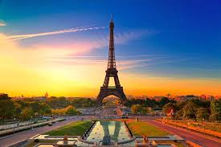

Paris is called the "City of Love" because its romantic atmosphere, artistic culture, aesthetic beauty, and popular landmarks like the Eiffel Tower have made it a dream destination for lovers, honeymooners, and artists for centuries. The city's charm, highlighted in literature and film, and the French culture's embrace of romantic expression, contribute to this nickname, which became more formalized around the time of the ICCA's city branding efforts in the 20th century.
